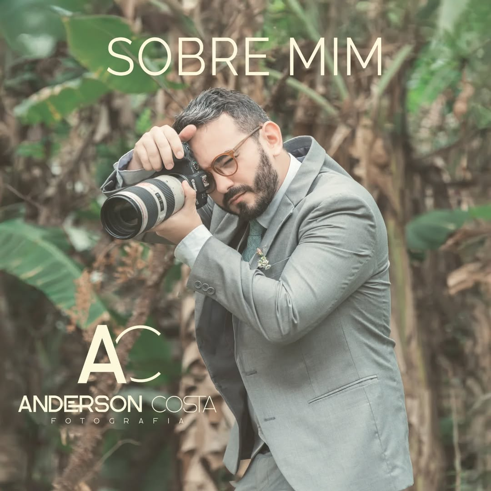

Com um olhar apurado e sensibilidade única, sou Anderson Costa, fotógrafo especializado em capturar as emoções mais genuínas e autênticas. Meu trabalho vai além de simples imagens: cada clique é uma obra que preserva histórias e sentimentos.
Seja em retratos individuais ou eventos especiais, estou aqui para contar a sua história de maneira única e inesquecível. Vamos criar juntos as lembranças que você vai guardar para sempre.
"Tranformo momentos em memórias eternas"
